Informes operativos
Generar listados de campaña, consultar Formularios Avanzados con y sin fotografías y revisar recorridos de Tracking.
Acceso a Informes y, cuando corresponda, un intervalo de fechas, formulario o usuario. Las consultas y exportaciones son operaciones de lectura.
Dónde estáInformes › Informes Genéricos, Informes Fotos Formularios Avanzados o Informes Tracking.
Elegir un Informe Genérico
- Abre Informes › Informes Genéricos y despliega Selecciona un informe.
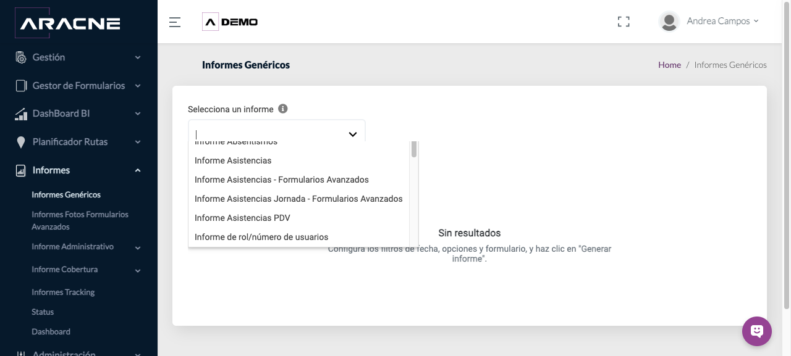
Paso 1. Selector con las opciones de informes disponibles. - Elige el informe. Aracne mostrará únicamente los filtros necesarios para esa opción.
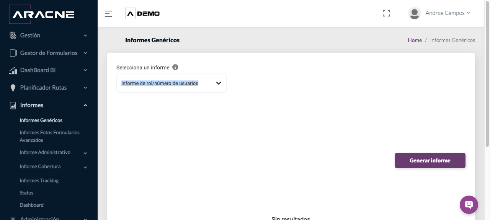
Paso 2. Ejemplo de selección en Informes Genéricos.
Opciones y filtros de Informes Genéricos
| Informe | Filtros necesarios |
|---|---|
| Informe Absentismos | Fecha Desde, Fecha Hasta y Usuario |
| Informe de rol/número de usuarios | No requiere filtros |
| Informe Empleados | No requiere filtros |
| Informe estados establecimientos | Fecha Desde y Fecha Hasta |
| Informe etapas establecimientos | Fecha Desde y Fecha Hasta |
| Informe Formularios - Formularios Avanzados | Fechas, opciones, formulario y usuario |
| Informe kilometraje rutas | Fecha Desde, Fecha Hasta y Usuario |
| Informe Productos | No requiere filtros |
| Informe Puntos de Venta | No requiere filtros |
| Informe Rutas | Fecha Desde, Fecha Hasta y Usuario |
| Informe Tracking | Fecha Desde, Fecha Hasta y Usuario |
| Informe Trayectos | Fecha Desde, Fecha Hasta y Usuario |
- Selecciona Informe Absentismos. Completa fecha desde, fecha hasta y usuario.
Paso 1. Fecha Desde, Fecha Hasta y Usuario - Selecciona Informe de rol/número de usuarios. Completa ningún filtro adicional.
Paso 2. No requiere filtros - Selecciona Informe Empleados. Completa ningún filtro adicional.
Paso 3. No requiere filtros - Selecciona Informe estados establecimientos. Completa fecha desde y fecha hasta.
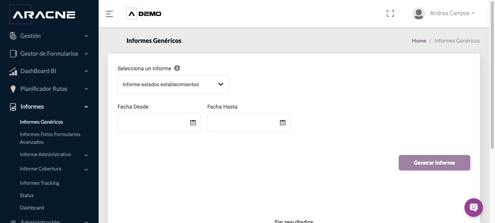
Paso 4. Fecha Desde y Fecha Hasta - Selecciona Informe etapas establecimientos. Completa fecha desde y fecha hasta.
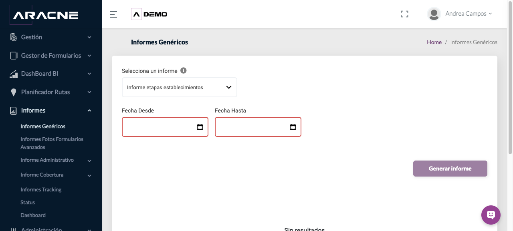
Paso 5. Fecha Desde y Fecha Hasta - Selecciona Informe Formularios - Formularios Avanzados. Completa fechas, opciones, formulario y usuario.
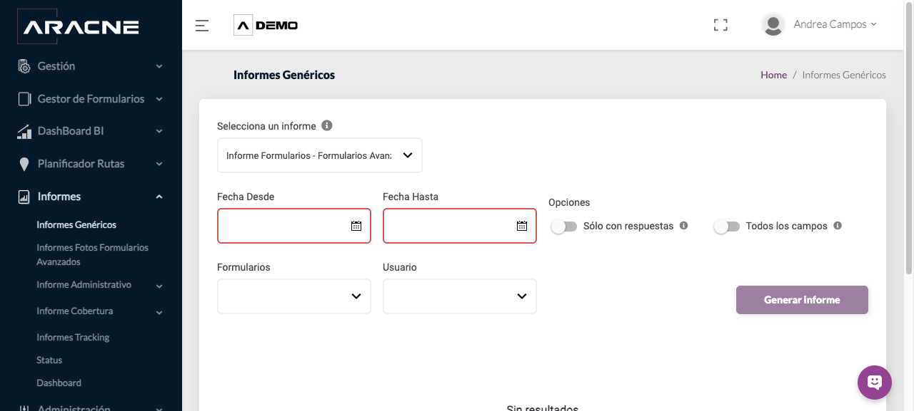
Paso 6. Fechas, opciones, formulario y usuario - Selecciona Informe kilometraje rutas. Completa fecha desde, fecha hasta y usuario.
Paso 7. Fecha Desde, Fecha Hasta y Usuario - Selecciona Informe Productos. Completa ningún filtro adicional.
Paso 8. No requiere filtros - Selecciona Informe Puntos de Venta. Completa ningún filtro adicional.
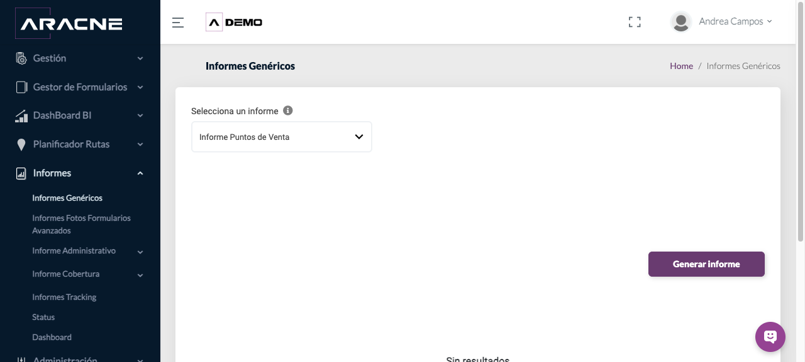
Paso 9. No requiere filtros - Selecciona Informe Rutas. Completa fecha desde, fecha hasta y usuario.
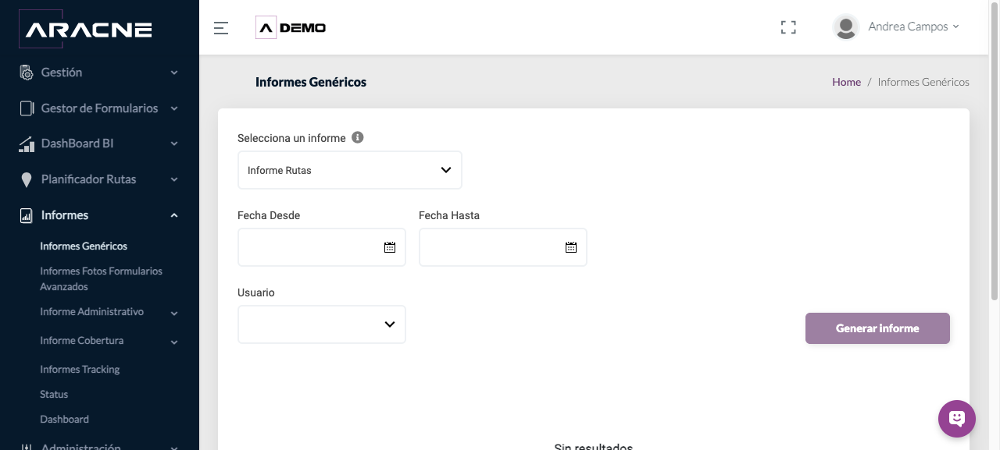
Paso 10. Fecha Desde, Fecha Hasta y Usuario - Selecciona Informe Tracking. Completa fecha desde, fecha hasta y usuario.
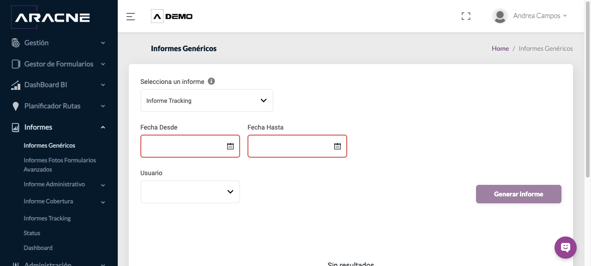
Paso 11. Fecha Desde, Fecha Hasta y Usuario - Selecciona Informe Trayectos. Completa fecha desde, fecha hasta y usuario.
Paso 12. Fecha Desde, Fecha Hasta y Usuario
Generar y exportar un Informe Genérico
- Selecciona el informe y completa los filtros visibles. Para los informes sin filtros adicionales, continúa directamente con Generar informe.
Paso 1. El informe de rol y usuarios puede generarse directamente. - Pulsa Generar informe. El resultado se presenta en una tabla con paginación y selector de elementos por página.
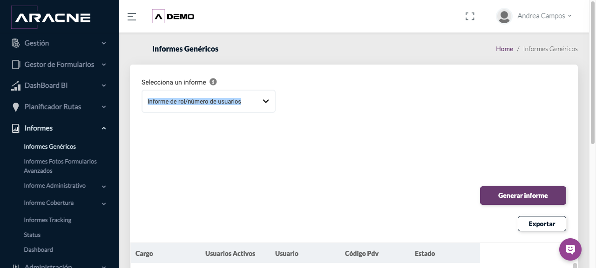
Paso 2. Resultado del informe de rol y número de usuarios. - Si aparece Exportar, púlsalo para descargar el resultado mostrado.
Paso 3. Botón Exportar sobre la tabla del informe. - En Informe Empleados, revisa el listado y sus datos antes de exportarlo. En la consulta comprobada se mostraron 88 elementos.
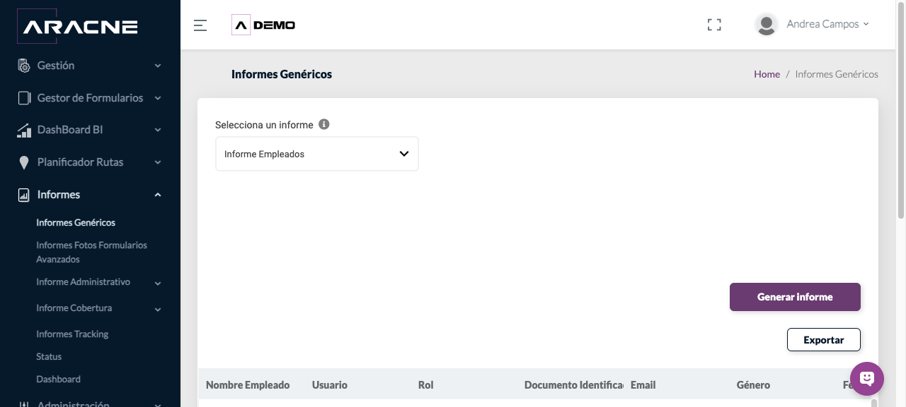
Paso 4. Tabla paginada de empleados y botón Exportar. - En Informe Productos, comprueba producto, códigos, PVP, línea, origen, marca, categoría y fecha de creación. La consulta comprobada mostró 299 elementos.
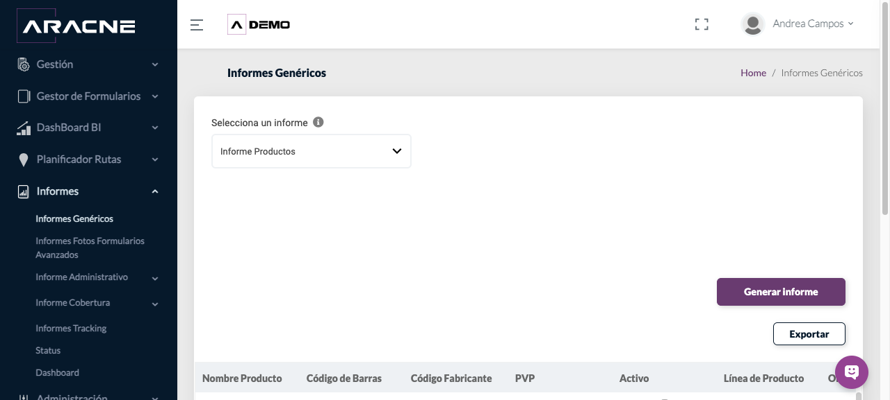
Paso 5. Tabla paginada de productos. - En Informe Puntos de Venta, comprueba los datos del establecimiento y la paginación antes de exportar. La consulta comprobada mostró 144 elementos.
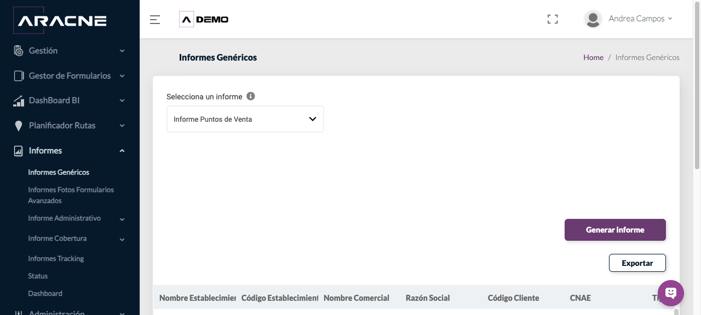
Paso 6. Tabla paginada de establecimientos.
Generar el informe de Formularios Avanzados
- Selecciona Informe Formularios - Formularios Avanzados.
Paso 1. Filtros específicos del informe. - Indica Fecha Desde y Fecha Hasta. Activa Sólo con respuestas para limitar el resultado o Todos los campos para incluir la estructura completa.
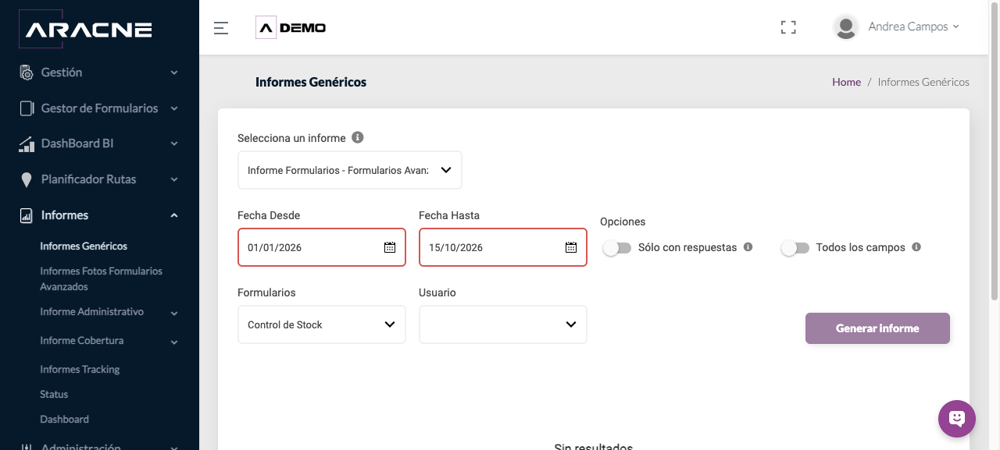
Paso 2. Fechas y opciones del informe. - Selecciona el Formulario y, si necesitas limitar el resultado, un Usuario. Pulsa Generar informe.
Paso 3. Formulario y usuario antes de generar.
Consultar fotografías de Formularios Avanzados
- Abre Informes Fotos Formularios Avanzados.
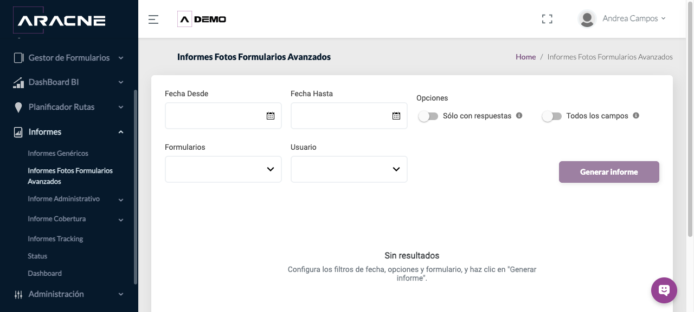
Paso 1. Pantalla inicial del informe fotográfico. - Selecciona Fecha Desde y Fecha Hasta, elige el Formulario y, si corresponde, el Usuario.

Paso 2. Periodo y formulario preparados para la consulta. - Utiliza Sólo con respuestas o Todos los campos según el contenido que necesites.
Paso 3. Controles de alcance situados entre las fechas y el formulario. - Pulsa Generar informe. Si el periodo o el formulario no tienen respuestas fotográficas, aparecerá Sin resultados.
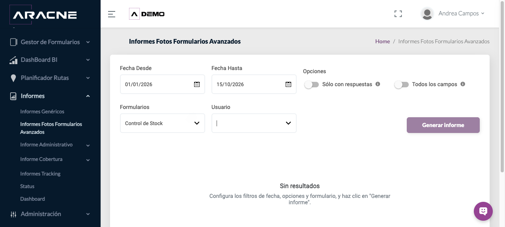
Paso 4. Estado sin resultados para la combinación consultada.
Consultar Tracking
- Abre Informes Tracking.
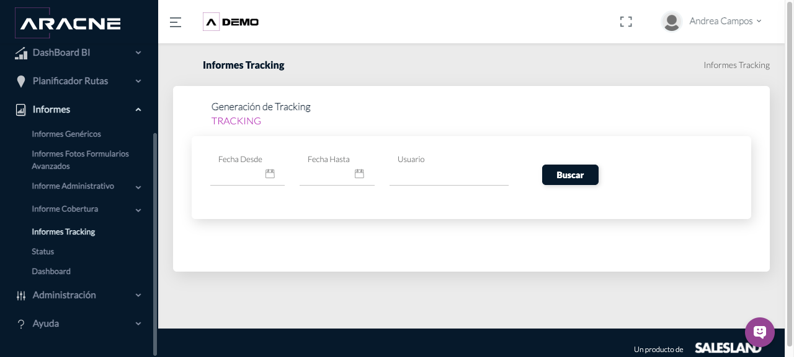
Paso 1. Filtros de fecha y usuario. - Indica Fecha Desde y Fecha Hasta y selecciona el Usuario.
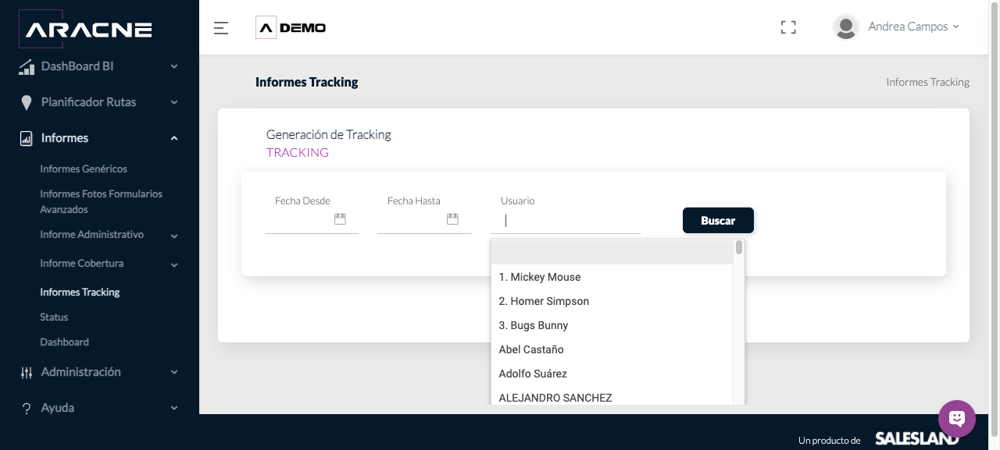
Paso 2. Selector de usuario abierto. - Pulsa Buscar. La tabla contiene Seleccionar, Nombre Completo, Usuario, Rol, Inicio Evento, Fin Evento, Inicio Tracking, Fin Tracking y Distancia.
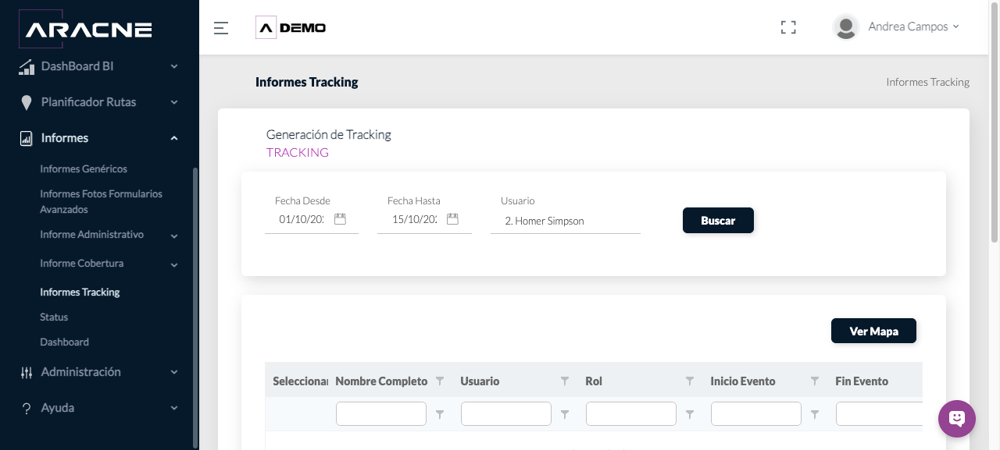
Paso 3. Tabla de Tracking tras ejecutar la búsqueda. - Cuando existan filas, marca la que quieras consultar y pulsa Ver Mapa. Si la tabla está vacía, cambia el periodo o el usuario antes de intentarlo.
Paso 4. Botón disponible junto al resultado de Tracking.
Resultado esperado y comprobación
Aracne muestra una tabla correspondiente al informe y a los filtros seleccionados. Cuando el resultado admite exportación, aparece el botón Exportar.
Comprueba el nombre del informe, fechas, formulario y usuario antes de utilizar el resultado. Tras una exportación, abre el archivo y verifica que corresponde a la opción consultada.
Problemas habituales
- Si aparece Sin resultados, amplía el periodo y revisa el formulario o usuario.
- Si una fecha queda marcada, corrige el formato y asegúrate de que Fecha Desde no sea posterior a Fecha Hasta.
- Si faltan fotografías, comprueba que el formulario elegido tenga campos de imagen con respuestas en el periodo.
- Si Tracking está vacío, prueba otro periodo o usuario. Ver Mapa necesita una fila seleccionada.
- Si no aparece Exportar, primero genera un resultado con datos.